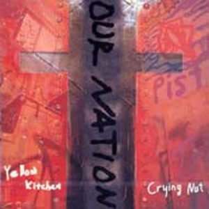
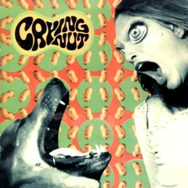
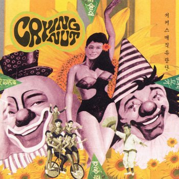
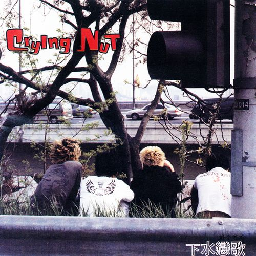
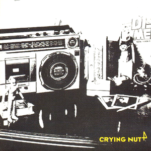
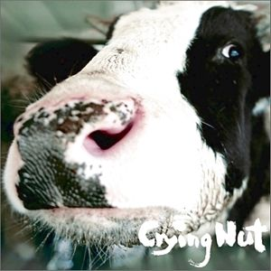
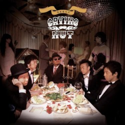
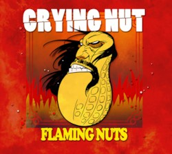
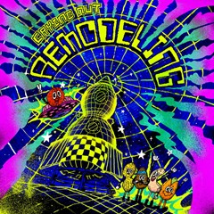

The History of
Crying nut
-

1996
- 아워네이션 1집
- 크라잉 넛 단독 음반은 아니고 같은 드럭 소속으로 활동하던 앰비언트/포스트 록 계통 밴드인 옐로우키친과 함께 만든 스플릿 형태의 앨범. 당시 카세트 테이프의 경우 A면에는 크라잉넛, B면에는 옐로우키친의 곡이 들어있었다. 대한민국 최초창기의 인디음반 중 하나로 희귀음반 취급받는다. 참고로 아워네이션 1집과 나중에 나온 정식앨범 1집의 '말 달리자' 는 가사가 약간 다르다.2010년 음악웹진 100비트에 의해 선정된 1990년대 100대 명반 중 94위에 랭크되었다.
-

1998
- 1집 말달리자
- 1998년 8월 1일에 발매된 크라잉 넛의 최초 독집 앨범. 드러머 이상혁이 작곡한 말달리자가 큰 히트를 치면서 대중들에게 널리 알려지게 된다. 흔히 남자끼리 간 노래방의 피날레를 장식하는 곡 중 TOP3 안에 꼭 들어가는 곡.2010년 음악웹진 100비트에 의해 선정된 1990년대 100대 명반 중 30위에 랭크되었다.
-

1999
- 2집 서커스 매직 유랑단
- 《서커스 매직 유랑단》은 대한민국 록 밴드 크라잉넛의 2집 정규 음반이다. 1999년에 발매 되었으며 타이틀 곡 서커스 매직 유랑단을 포함하여 다수의 곡들이 사랑을 받았다. 이 앨범이 발매됐을때부터 키보드 연주자 김인수가 크라잉 넛의 공식 멤버로 활동한다.2010년 음악웹진 100비트에 의해 선정된 1990년대 100대 명반 중 84위에 랭크되었다.
-

2001
- 3집 하수연가
- 《하수연가》는 대한민국의 록 밴드 크라잉넛의 3집 정규 앨범이다. 수록곡 밤이 깊었네가 크게 히트하였고, 지독한 노래는 같은 해 개봉해 흥행에 성공한 영화 《신라의 달밤》에 삽입되었다. 크라잉 넛이 군입대 전에 남긴 앨범들 중 최고의 걸작으로 꼽힌다.2001년 한국일보 선정 베스트 앨범 5, 소리바다와 백비트에서 선정한 2000년대 베스트 앨범 100,. 벅스에서 선정한 2000년대 베스트 인디앨범 100에 선정되었다.
-

2002
- 4집 고물라디오
- 《고물라디오》는 2002년 12월 발매한 대한민국 록 밴드 크라잉넛의 정규 4집 앨범이다. 이 앨범의 발매 직후인 2002년 12월, 박윤식, 이상면, 이상혁, 한경록등 네명의 동갑내기 멤버들은 전원 동반 군입대한다. 그럼에도 불구하고 퀵서비스맨, 필살 Offside, 고물라디오등 다수의 곡들이 대중의 사랑을 받는다.
-

2006
- 5집 OK 목장의 젖소
- 《OK 목장의 젖소》는 한국의 록 밴드 크라잉넛이 2006년에 발매한 정규 음반이다. 군복무 후 발매한 앨범이라는 부담에도 불구하고 대중에게 크게 사랑받은 앨범이기도 하다. 이 앨범에서 크라잉 넛은 펑크라는 밑그림 안에 다양한 장르의 음악을 색칠해 넣으며 한창 무르익은 음악적 역량을 보여주었다. 룩셈부르크, 명동 콜링, 부딪쳐를 포함한 다수의 곡들이 대중에게 사랑을 받았다.
-

2009
- 6집 불편한 파티
- 《불편한 파티》는 크라잉넛이 2009년 8월 12일에 발매한 6번째 정규 음반이다.이 앨범부터 이들은 자신들의 연습실에 'TOBADA'라는 녹음실을 만들어서 작사,작곡부터 레코딩까지 모든 작업을 독립적으로 수행할 수 있는 시스템을 완성하게 되는데, 이러한 시스템을 바탕으로 만들어진 곡 'Gold Rush'는 아트록과 메탈이 절묘하게 조화된 수작으로 녹음하는 데만 4-5개월이 소요된 역작이기도 하다. 수록곡 중 비둘기가 가장 많은 대중에게 사랑 받있다.
-

2013
- 7집 FLAMING NUTS
- 6집 불편한 파티가 나온지 거의 4년만에, 7집을 발매하였다. 전에 비해 힙합이나 일렉트로닉 등 다양한 장르와 결합하는 등 새로운 것들에 대한 시도가 많이 보이는 앨범이다. 앨범 타이틀 'Flaming nuts'는 수록곡의 음악색과는 상관 없으며, 만화가 강도하가 그려준 커버 일러스트를 보고 즉흥적으로 지은 것이라고 한다. 강도하는 커버 외에도 속지의 일러스트도 담당했다.
-

2018
- 8집 리모델링
- 7집 이후 5년만에 정규앨범을 발표했다. [리모델링]이라고 명명한 8집 앨법은 ‘기본 토대를 보완해서 증축하거나 개축한다’는 의미를 담은 ‘리모델링’이라는 단어처럼, 초창기 크라잉넛을 존재하게 했던 펑크록 음악에 기반을 두면서도 2집 [서커스 매직 유랑단]부터 보여준 다양한 음악적 시도와 스펙트럼의 확장이 이번 8집에서도 꾸준히 이어짐을 내포하고 있다.